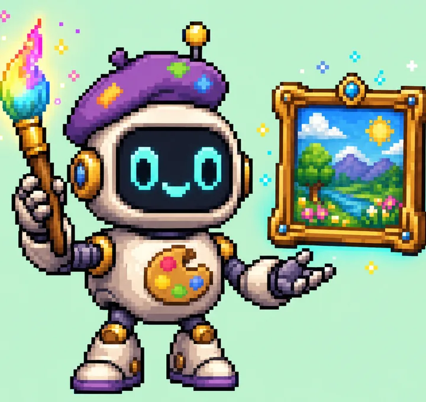
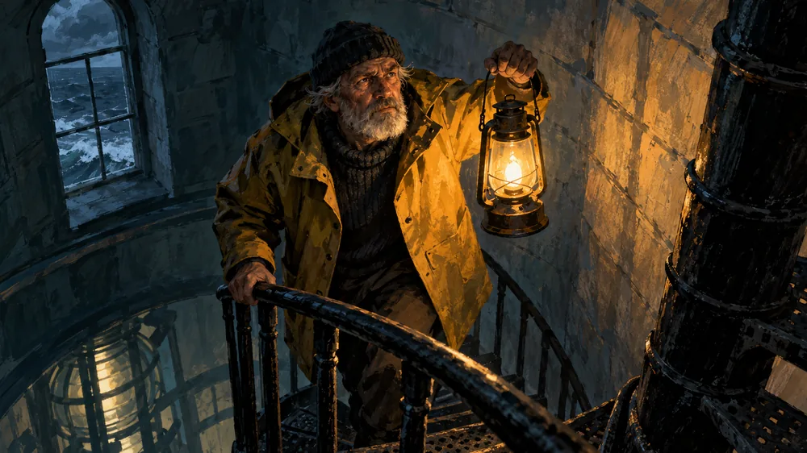

La connexion « Se connecter avec ChatGPT » que vous utilisez pour Codex sait faire plus que du code. Deux outils gratuits et open source permettent à Claude Code de s’en servir pour créer des images et des voix. De quoi faire des visuels, des narrations, des pubs et des courts films.
Copiez quatre lignes dans votre terminal. L’outil est ajouté à Claude Code pour tous les projets de votre ordinateur.
01
Connectez-vous avec ChatGPT
Votre navigateur s’ouvre sur la page de connexion officielle de ChatGPT. Vous y tapez votre mot de passe, jamais dans l’outil.
02
Demandez à Claude
Avec vos mots, dans n’importe quel projet. Claude choisit l’outil, crée le fichier et l’enregistre à côté de votre travail.
03
Vous tapez
> Crée un renard roux à l’aquarelle dans la neige et enregistre-le dans renard.png.
Deux outils
Un pour les images, un pour les voix
Chacun est un petit serveur MCP : un module qui donne une nouvelle compétence à Claude Code. Les deux utilisent la même connexion ChatGPT.

GPTImage
Disponible
Des images et des retouches par GPT Image 2, directement depuis Claude Code.
Logos, illustrations, maquettes, bannières, textures, storyboards. Les illustrations et le storyboard de cette page ont été faits avec.
Part de vos images de référence : styles, éléments de marque, croquis. Il les range dans un dossier references/ pour que chaque nouvelle image soit meilleure.
N’écrase jamais un fichier. Chaque nouvelle version est enregistrée à côté de la précédente.
Trois outils pour Claude : generate_image, list_references, image_auth_status.
Marche aussi en une seule commande dans le terminal.
Exemple de demande
Génère un renard roux à l’aquarelle dans la neige et enregistre-le dans renard.png avec l’outil gptimage.
Installation
git clone https://github.com/Connected-Mate/gptimage.git
cd gptimage
npm install
./install.sh
Demande Node.js 20 ou plus récent, Claude Code et un abonnement ChatGPT payant (Plus, Pro…). Le script est prévu pour macOS et Linux. Redémarrez Claude Code ensuite.
Du texte en entrée, une voix en sortie. Un studio de voix pour Claude Code, avec votre abonnement ChatGPT.
Demandez à Claude une narration, une voix off ou un dialogue, et recevez un MP3 ou un WAV. GPTVoice pilote le modèle vocal temps réel d'OpenAI avec votre connexion ChatGPT, et vérifie que chaque mot a été lu.
Ce qu’il fait
10 voix (marin, cedar, coral, sage…). Chaque voix parle toutes les langues : c'est le texte qui décide.
Dirigez le jeu avec des mots simples : émotion, rythme, accent, chuchotement.
Les longs textes sont découpés aux phrases puis réunis en un seul fichier, avec des pauses naturelles.
Lecture mot pour mot : chaque passage est comparé à votre texte et réenregistré s'il s'en écarte.
Des dialogues à plusieurs voix dans un seul fichier audio.
Sous-titres (.srt) en option pour votre logiciel de montage, et transcription de n'importe quel fichier audio.
Exemple de demande
Lis ce texte comme un conteur posé, avec une pause avant la dernière phrase, et enregistre-le dans keeper.mp3.
Écouter
Narration de « The Keeper »
cedar, conteur posé
Cet extrait n’a pas pu se charger. La transcription est juste en dessous.
Transcription
The storm came early that night. Up in the tower, the old keeper climbed toward the lamp. One light, and a boat finds its way home.
Dialogue à deux voix, en français
coral et ash, un seul fichier
Cet extrait n’a pas pu se charger. La transcription est juste en dessous.
Transcription
Léa : Tu as entendu ? On peut faire parler nos films sans payer un centime de plus ! Hugo : Sans clé d'API ? Ça me paraît trop beau pour être vrai. Léa : Il suffit de se connecter avec son compte ChatGPT. Le reste se fait tout seul. Hugo : Bon… alors on enregistre la bande-annonce ce soir.
Voix de bande-annonce
cedar, grave et dramatique
Cet extrait n’a pas pu se charger. La transcription est juste en dessous.
Transcription
In a world where every story deserves a voice... one tool changes everything. No API key. No extra bill. Just your words, brought to life.
Le code n’est pas encore public. La commande d’installation apparaîtra ici dès que le dépôt sera en ligne.
Images + voix
Un court film, à partir d’une idée
Voici la méthode pour un film de 30 secondes appelé The Keeper (le gardien de phare). Les trois images ci-dessous sont réelles : chacune a été faite avec GPTImage, en une seule demande.
Scène 1
Cette nuit-là, la tempête arriva tôt.

Scène 2
Dans la tour, le vieux gardien monta vers la lampe.
Scène 3
Une lumière, et un bateau retrouve le port.
Storyboard de The Keeper, fait avec GPTImage.
Écrire
Demandez à Claude un court scénario découpé en scènes, avec une phrase de narration par scène.
Peindre
GPTImage dessine une image par scène. Réutilisez la première comme référence pour garder le même style.
Faire parler
GPTVoice lit la narration, avec des sous-titres pour caler vos plans.
Assembler
Demandez à Claude de réunir images et son en vidéo avec ffmpeg (gratuit, à installer à part).
La même recette marche pour
une pub produit avec voix off
une vidéo qui explique votre appli
un générique de podcast
des posts réseaux sociaux lus à voix haute
une histoire du soir illustrée
Questions
C’est vraiment gratuit ?
Les outils sont gratuits et open source. Ce qu’ils produisent est décompté de l’abonnement ChatGPT que vous payez déjà, dans ses limites. Pas de facture à l’image, pas d’abonnement en plus.
Faut-il une clé API ?
Non. Vous vous connectez une fois avec votre compte ChatGPT, dans votre propre navigateur. L’outil ne voit jamais votre mot de passe.
Quel abonnement ChatGPT faut-il ?
Un abonnement payant actif, comme Plus ou Pro. Ce que vous pouvez produire dépend des limites de votre formule.
Ça marche en dehors de Claude Code ?
C’est conçu et testé pour Claude Code. GPTImage est un serveur MCP standard : d’autres applis MCP peuvent marcher, mais elles ne sont pas testées. Il existe aussi une commande de terminal.
Où est stockée ma connexion ?
Uniquement sur votre ordinateur, dans ~/.gptimage/auth.json (ou votre connexion Codex CLI existante). Elle n’est envoyée qu’à OpenAI. Lancez npm run logout pour la supprimer.
J’ai une erreur « 429 ». Que faire ?
Vous avez atteint la limite de votre abonnement pour le moment. Patientez un peu, réessayez, et évitez les grosses séries d’un coup.
Puis-je l’utiliser pour mon entreprise ?
Nous le déconseillons. C’est prévu pour un usage personnel, sur votre ordinateur. Pour un usage commercial ou à gros volume, utilisez l’API officielle d’OpenAI.
Où est décompté l’usage des voix ?
GPTVoice utilise le modèle vocal temps réel d’OpenAI, qui accepte votre connexion ChatGPT (l’API vocale payante d’OpenAI la refuse). OpenAI ne documente pas où cet usage est décompté. Après vos premières voix, jetez un œil à platform.openai.com/usage : si quelque chose y apparaît, arrêtez.
À lire
C’est une zone grise, et nous le disons
Non officiel. « Se connecter avec ChatGPT » est prévu pour Codex. Ces outils réutilisent cette connexion pour atteindre les modèles d’image et de voix d’OpenAI. Ça marche et c’est très répandu, mais ce n’est pas une API officiellement prise en charge.
Usage personnel. Gardez-le personnel et sur votre machine.
Limites. Un usage intensif peut déclencher les limites de votre abonnement (erreur 429). Patientez et réessayez.
Risque pour le compte. Au pire, OpenAI pourrait restreindre votre compte. En utilisant ces outils, vous acceptez ce risque.
Aucun lien officiel. Ni avec OpenAI, ni avec Anthropic. Respectez les conditions d’utilisation d’OpenAI.